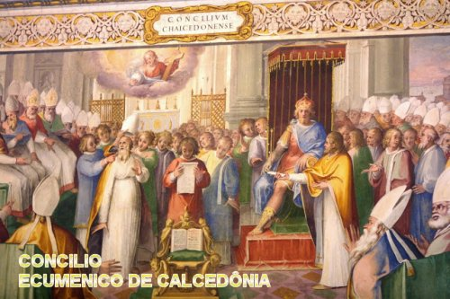
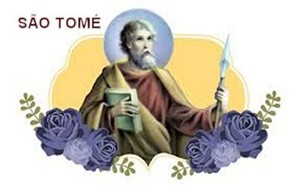

"DERRADEIRAS PALAVRAS"
Tomé foi um admirável e competente Discípulo de JESUS. Era um homem calmo, de natureza tranquila e dedicada, que se traduzia num espírito vibrante e muito observador, o que lhe proporcionava uma preciosa oportunidade de conhecer um pouco mais o interior das pessoas que trabalhavam com ele, assim como aquelas que se mantinham em permanentes contatos, buscando sempre copiar o caráter, o cumprimento da justiça e do direito, que exaustivamente o Discípulo de JESUS pregava e incutia no coração de todos. Entre os mais próximos dele, se comentava o grande desejo de Tomé também evangelizar a China. Porque as noticias que lhe chegavam sobre o povo chinês, evidenciavam um exemplar comportamento público e um espírito aberto as orações e a disciplina, que estimulavam o seu desejo de conhecer e evangelizar aquela grande nação. É assim que, depois de evangelizar por muitos anos a região do Malabar na Índia, deixou uma grande quantidade de discípulos competentes e interessados, para dar continuidade a evangelização, e com mais cinco discípulos, deslocou-se para evangelizar outra grande área indiana em Coromandel - Bengala, onde deu plena continuidade ao projeto de fervorosa evangelização, conseguindo uma excelente participação do povo, que se apresentava interessados, vibrantes e fieis. A fé de todos cresceu muito e ele teve de preparar muitos outros Discípulos. E assim, a evangelização nessa grande área evoluiu ao longo dos anos, enchendo o seu coração de alegria, e verdadeiramente, nos momentos de descanso, depois de vários anos de muita luta nessa área indiana, começou a pensar seriamente na possibilidade real de evangelizar o povo da China. Todavia, não teve tempo. Depois de muito trabalho nessa região indiana, com competente e extremosa dedicação, convertendo a população e os índios, foi morto numa emboscada pelas flechas e lanças de uma tribo rebelde, no ano 72 dC.


"CONVITE"
Este Site foi construído pelo Apostolado dos Sagrados Corações. Clique aqui ou no endereço abaixo para visitar o nosso PORTAL. Nele encontrará uma apreciável quantidade de Sites sobre o CRIADOR, o ESPÍRITO SANTO, JESUS DE NAZARÉ, sobre NOSSA SENHORA, os SANTOS ANJOS, e também, Sites que apresentam a Vida e Obra de diversos SANTOS. Todos eles elaborados com muito amor e dedicação, fundamentados na Sagrada Escritura, na Tradição Cristã, na Vida e Obra dos Santos e nas Manifestações Sobrenaturais, sobretudo, com a intenção de somente informar a Verdade.
http://www.apostoladosagradoscoracoes.com/
NOSSO E-MAIL
Desejando comunicar-se conosco, favor utilizar os E-mails abaixo:
contato@apostoladosagradoscoracoes.com.br
e
contato@apostoladosagradoscoracoes.com.br
FIRMAS QUE DIVULGAM O SITE